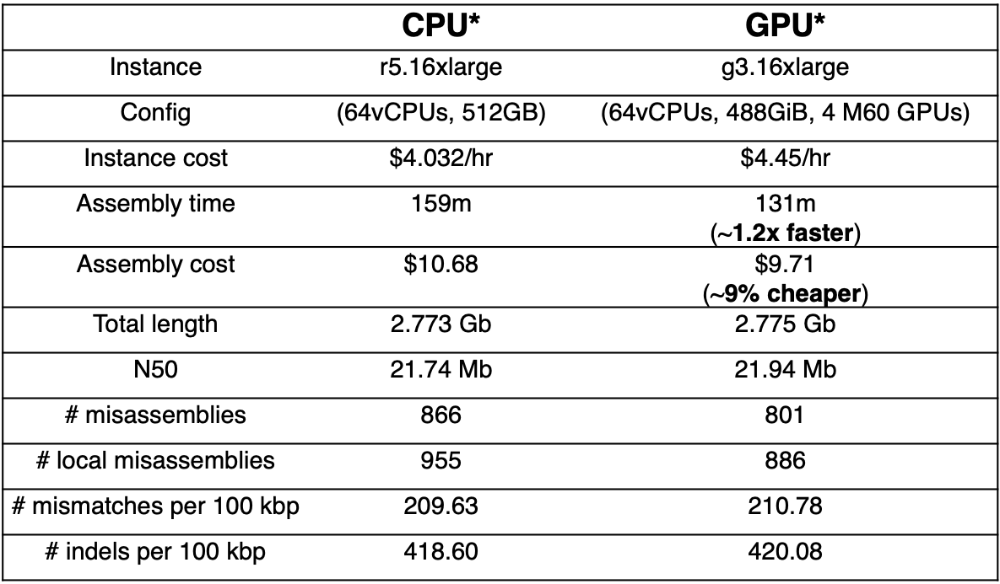

GPU acceleration
Shasta includes a GPU implementation of the computation of marker alignments, which results in improved performance and assembly cost. It is likely that future versions of Shasta will also use GPU accelaration for other computational phases. The table below contains a conparison illustrating the benefits of GPU acceleration for a human assembly at low coverage 24x.

Supported platform
GPU acceleration uses the Nvidia CUDA toolkit and is supported for Nvidia GPUs only. It is currently only supported for Ubuntu 18.04.
Installing the CUDA toolkit
To use GPU acceleration you need to install the Nvidia CUDA toolkit. This is required both for building and running Shasta. At runtime, the Nvidia CUDA toolkit is always required, even if you are using the Shasta static executable or the Shasta AppImage.
To download and install the appropriate version of the
Nvidia CUDA toolkit, you can use Shasta script
InstallCuda-Ubuntu-18.04.sh
available in a Shasta source tree at shasta/script
and in a Shasta install tree at shasta-install/bin.
This script requires root privilege, so you will typically want
so invoke it using sudo.
If for some reason you prefer not to use this script, directions for downloading and installing the appropriate version of the toolkit are available here.
On machines with at Nvidia GPU, the toolkit is often already installed.
Downloading a pre-built version of Shasta with GPU acceleration
- For a Shasta release
x.y.zstarting at 0.4.0, you can download from the GitHub page for the release the asset namedshastaGpu-Linux-x.y.z. This is a static executable with GPU accelaration capability. - You can also download a current test build following
these directions
and selecting the build artifact named
shastaGpu-Ubuntu-18.04.
Building with GPU acceleration
The code builds with GPU acceleration turned off by default.
To obtain a build with GPU acceleration, you can also build it yourself
on Ubuntu 18.04
after installings the CUDA toolkit as described above by specifying
the option below when running cmake:
-DBUILD_FOR_GPU=ON
Following make, this will generate a dynamic executable (shastaDynamic) and a static executable
(shastaGpu) which supports GPU acceleration.
Running an assembly with GPU acceleration
Run the assembly as usual, adding --useGpu to your command line.
Selecting GPU devices for Shasta execution
By default, when command line option
--useGpu is specified on a GPU-enabled version of Shasta,
all available GPU devices are used.
However, it is also
possible to selectively choose a subset of available GPU devices by setting environment
variable CUDA_VISIBLE_DEVICES.
Each of the GPUs attached to a computer is assigned an identifier consisting of a small integer.
To use a subset of the GPUs, set CUDA_VISIBLE_DEVICES to a comma separated list
of the identifiers for the GPUs you want to use. For example, assuming your
system has GPUs 0, 1, 2, and 3, and you want to only use 2 and 3:
export CUDA_VISIBLE_DEVICES=2,3
You can use the following command to list the available GPUs and their identifiers:
nvidia-smi --list-gpus
For more information on the CUDA_VISIBLE_DEVICES environment variable see
here.